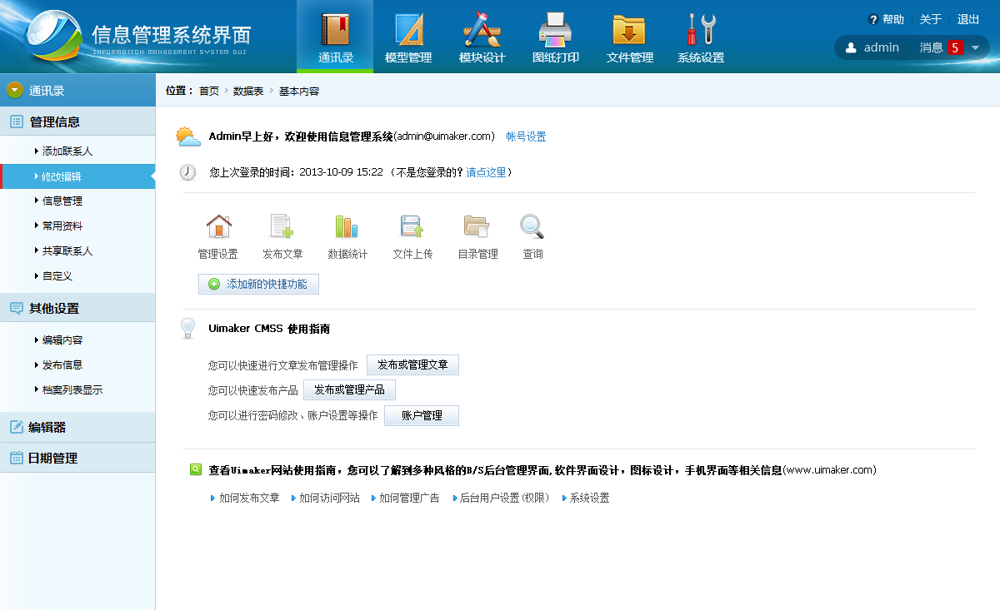
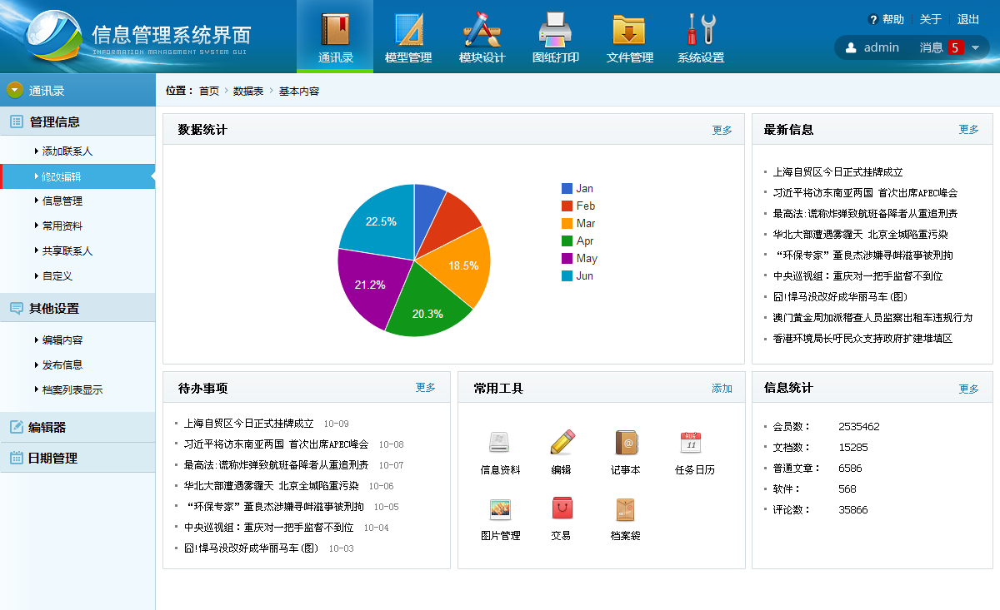
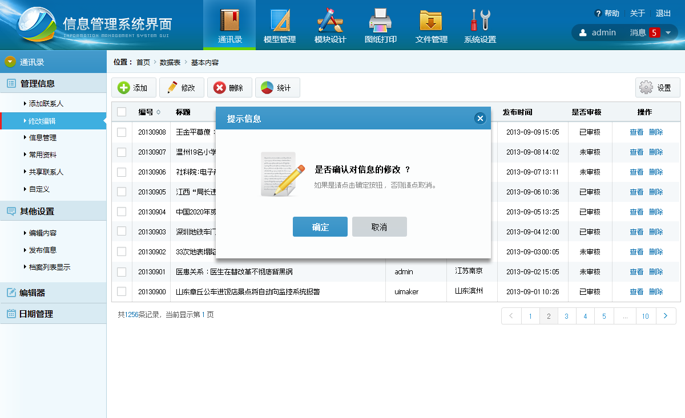
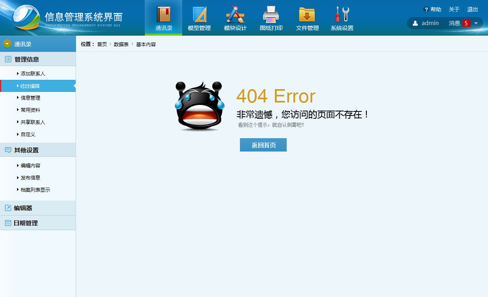

第四个div显示了！！！！！！！！！！！！！！！
使用方法
var cTabpanelFrame = new Custom_tabpanel(); cTabpanelFrame.init({ headDiv : $('#ifreameHeadDiv'), // 每次加载必填 config : { // 每次加载可选 //页签是否支持关闭功能(低级别) closeable : true, //页签的方位设置,目前提供2种['top', 'bottom']（暂时不支持） //position : 'top', //滚动按钮的布局[true:右侧显示(默认) | false:两边显示]（暂时无滚动条） //layout : true, // 默认div模式，[iframe,div]，如果是div（panelType无效，asyn无效和data中的url无效） panelType : 'iframe', //页签是否为异步处理(针对url的功能是否做异步处理，如果panelType=div则只能同步处理) //asyn : true, //默认显示的页签数[0开始] showNum : 0 }, data : [ // 每次加载必填 {title : '百度' , content : $('#ifreameArea0') , url : 'http://www.baidu.com' , closeable : true }, {title : '126邮箱' , content : $('#ifreameArea1') , url : 'http://www.126.com' , closeable : true }, {title : '新浪' , content : $('#ifreameArea2') , url : 'http://www.sina.com.cn' , closeable : false }, {title : '迅雷看看' , content : $('#ifreameArea3') , url : 'http://www.kankan.com' , closeable : true } ] }); //添加一个TabpanelFrame cTabpanelFrame.addLiFun({title : '搜狐' , content : $('#ifreameArea4') , url : 'http://www.sohu.com/' , closeable : true }); //删除一个TabpanelFrame cTabpanelFrame.deleteLiFun('测试栏目4'); // html中写法 <!-- <div id="ifreameHeadDiv" class="tabpanel"></div> --> <!-- <iframe id="ifreameArea0" class="tabpanel_area" height="500px"></iframe> --> <!-- <iframe id="ifreameArea1" class="tabpanel_area" height="500px"></iframe> --> <!-- <iframe id="ifreameArea2" class="tabpanel_area" height="500px"></iframe> --> <!-- <iframe id="ifreameArea3" class="tabpanel_area" height="500px"></iframe> --> <!-- <iframe id="ifreameArea4" class="tabpanel_area" style="height: 500px;display: none;"></iframe> -->